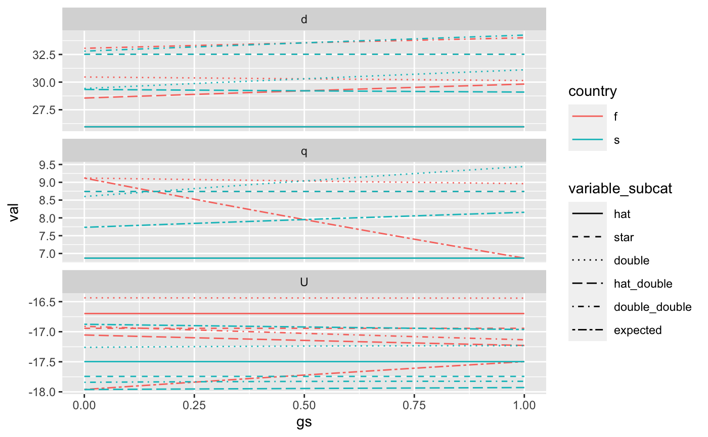

gather_outcomes.RdThis function gathers the outcome variables (utility, depth, pumping) from evaluate_treaty_cases
in a format that makes it easier to plot and visualize with ggplot2.
gather_outcomes(treaty_df)
| treaty_df | Outcomes from |
|---|
#> #>library(tidyr)#> #>#> #> #>params <- example_params_confined params$gs <- NULL params <- crossing(params,gs=seq(0,1,by=0.05)) treaty_df <- evaluate_treaty_cases(params,'qudp') treaty_long <- gather_outcomes(treaty_df) ggplot(treaty_long) + geom_line(aes(x=gs,y=val,color=country,linetype=variable_subcat)) + facet_wrap(~variable_cat,scales="free_y",ncol=1) + scale_linetype_manual(values=c("solid","dashed","dotted","longdash")) + theme(legend.key.width = unit(1,"cm"))